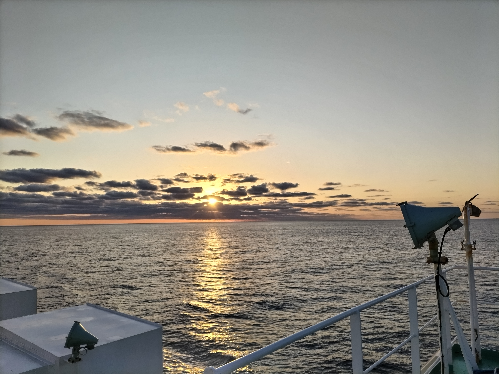
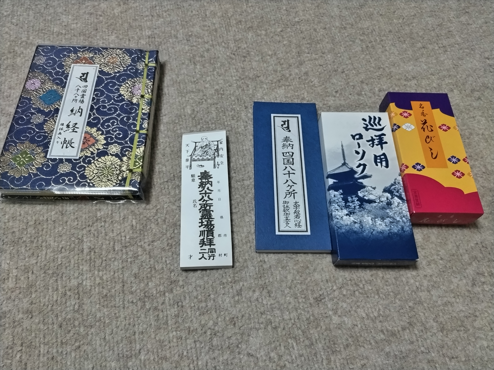
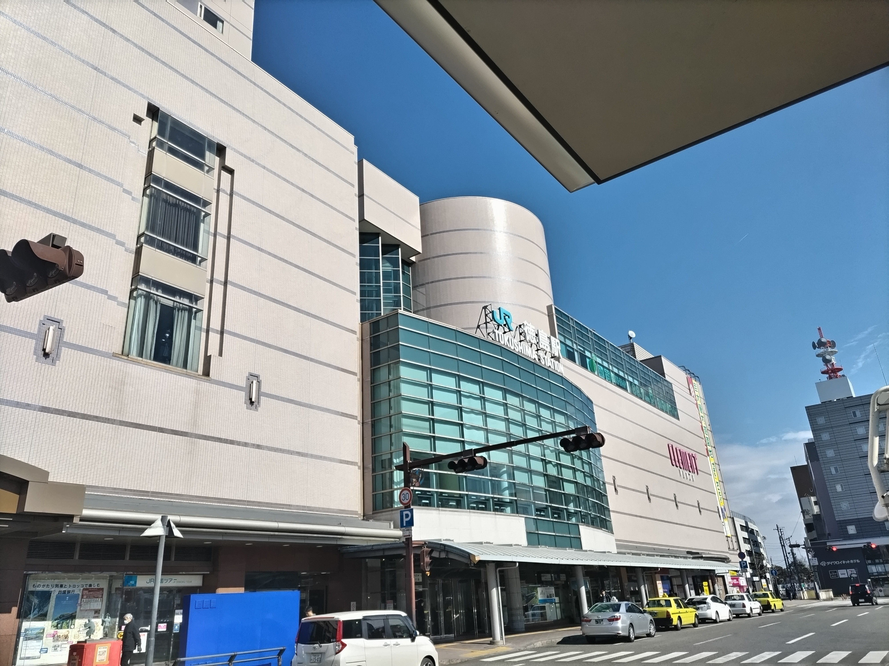
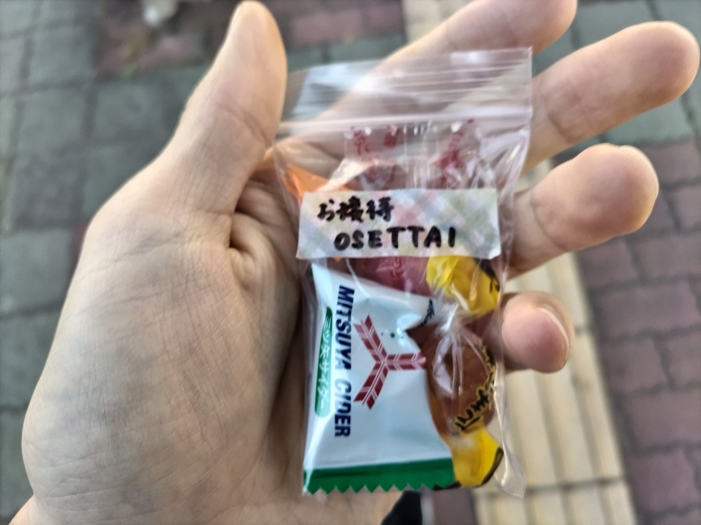
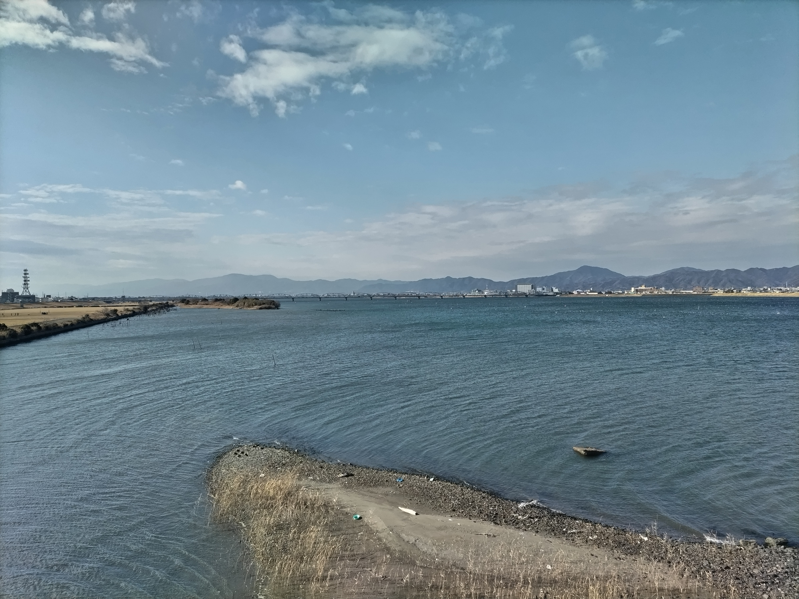
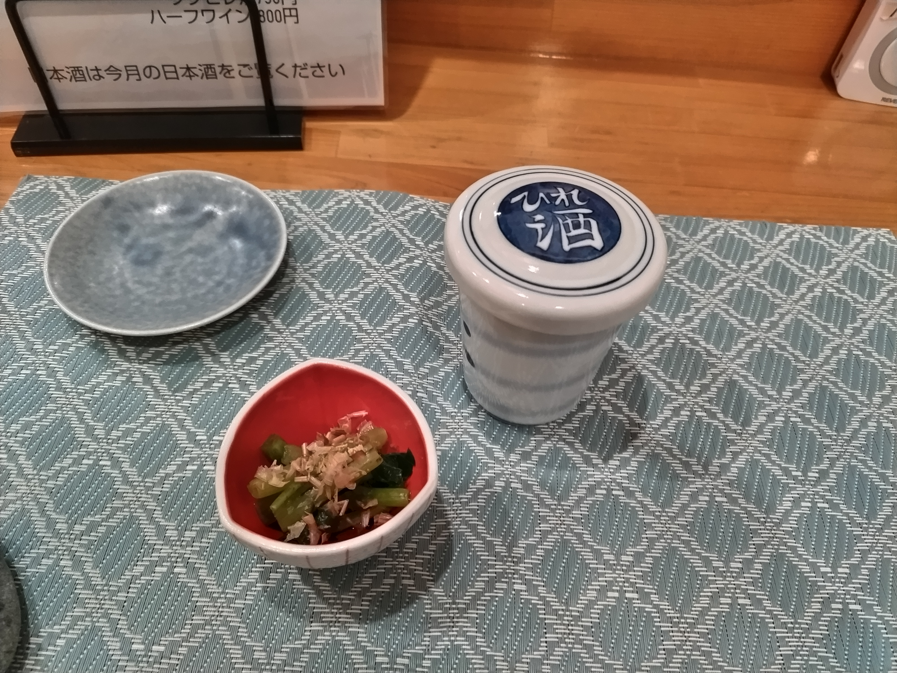
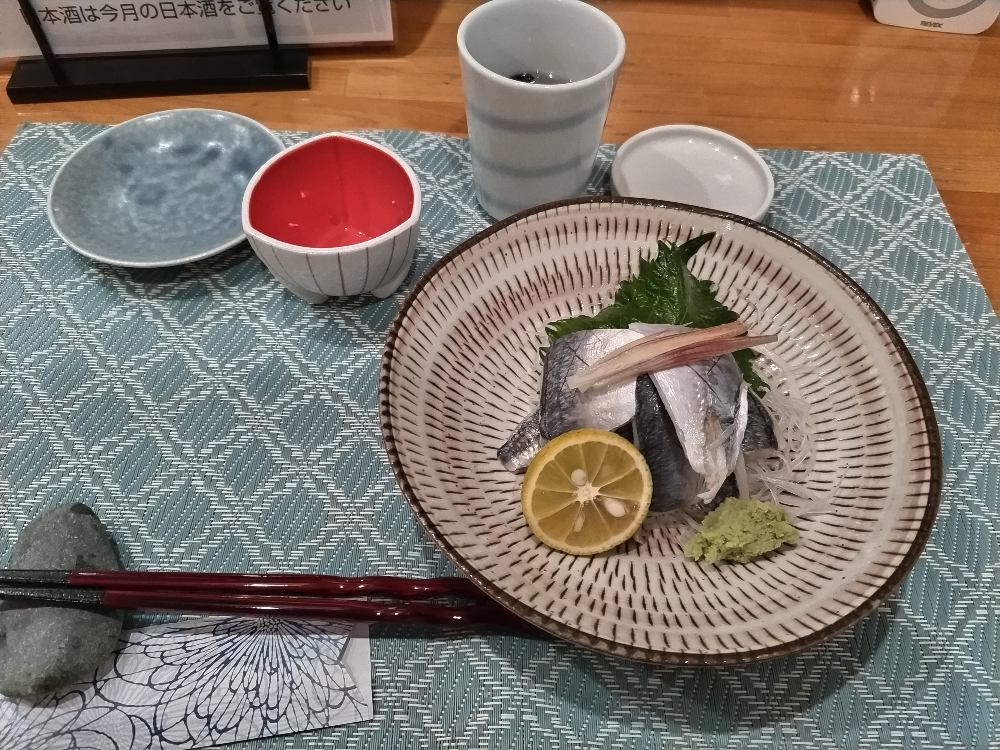

| 区切り | 第1回 第1日 |
| 日付 | 2025年2月12日 |
| 区間 | 太平洋 → 霊山寺 |
| 歩行距離 | 約18 km |
| 札所 | －（打ち始めは翌日） |
紀伊半島沖で目を覚まし，船内から日の出を拝む．昼ごろに徳島港に到着するので，それまで自由な時間ができた．すでに前日に買ったガイドブックは今回の旅程の範囲を読み切っている．手帳サイズの五線譜とボールペンを取り出し，即興的に前奏曲をひとつ書き上げた．もともと遍路旅しながら曲を書こうかなどと思っていたが，生きるのに必死な人間に音楽はあまりにも贅沢であるということに，この時は思い至っていなかった．夜が来る前に寝床を確保しなければならない条件で，どうして五線譜を広げる余裕があろうか．早朝から歩き始めるべき明日を前に，どこに譜面と向き合う時間が生まれようか．歩きながら流れてくる音楽も，自分の潜在的意識の他にたどり着く場所がなかったことに，後日気づくこととなる．

徳島港に到着すると徳島駅への路線バスへ．本当はフェリー乗り場から歩いて向かおうと考えていたが，徒歩での脱出の可否がわからず，他の徒歩降車勢と一緒にバスに乗り込む．徳島駅前の観光案内所で遍路用品が購入できることを確認していたので，大荷物にならない程度のものを購入．一番札所，霊山寺でも購入可能であるが，明日の打ち始めに先立って遍路用品がどのようなものか見ておきたかったこと，納め札への記名をあらかじめ行う必要があったことからここで購入する決断をした．なお，納め札はお試しお遍路さんが不要になったからと観光案内所に寄付して置いて行ったものをサービスでいただいた．これが私のお遍路旅で初めて受けた「お接待」となった．

さて，お遍路用品を一部紹介しよう．上の写真に，衣装類を除いた一般的な小物類が収まっている．当然，個々のスタイルによって用具の使用も衣装の着用も自由である．ここではあくまで私の様式（そして，それは当時の一般的な様式の十分な範囲内である）を示すこととする．
観光案内所の方に，これから一番札所霊山寺まで徒歩で向かうことを伝えると大変驚かれた．徒歩旅のこだわりが強かった自分にとっては自然な発想であったが．そもそも，ここから数日間の徒歩旅に臨むにあたって，数時間の追加の徒歩など誤差にすぎない．また，明日からお遍路を始めようという心づもりでいたので早くに宿へついてもやることがない．飴玉をいただいて，一番札所のある中央構造線の方面へ，数日後に再び渡ることとなる吉野川を越え，北上する．



意外にも早く空が暗くなり始めて焦りが募る．日が落ちてからの寒さにまだ慣れず，持参していたお菓子を補給しながら北へ向かう．思えば，孤独さという意味ではこの時が最も精神的にきつかったかもしれない．お遍路を始める前に丁度良い刺激となった．途中翌日の朝食を購入しつつ，愛染町で居酒屋に入った．


バックパックを背負っていたこともあり，すぐにお遍路の者だと認識してくれると，大学生の旅人のエピソードなどを聞かせてくださった．店主さんの人柄と料理で十分に励まされ，残りの道を急いだ．
ゲストハウス「お遍路ハウス一番門前通り」にて宿泊．不自由なく快適に泊めていただいた．